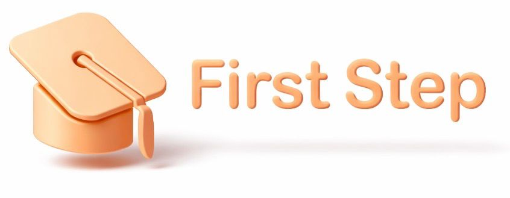

University Innovation Bootcamp
First Step
AI Learning Companion
for Children
Curiosidade
Aprendizado
Segurança
Apresentado por: Equipe Inovação
Março 2026

Status
Monitoramento Ativo
Transformando o tempo de tela em tempo de qualidade.